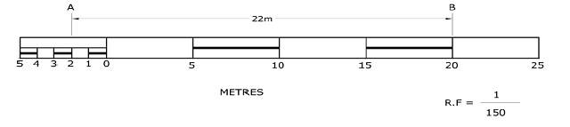
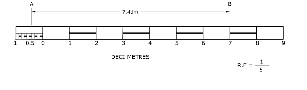
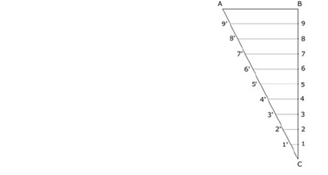
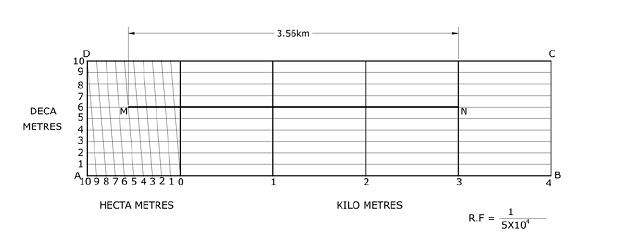

Plain Scales: Plain scales read or measure upto two units or a unit and its sub-division, for example centimetres (cm) and millimetres (mm). When measurements are required upto first decimal, for example 2.3 m or 4.6 cm etc. It consists of a line divided into number of equal main parts and the first main part is sub-divided into smaller parts. Mark zero (O) at the end of the first main part. From zero mark numbers to the main parts or units towards right and give numbers to the sub-divisions or smaller parts towards left. Give the names of the units and sub-units below clearly. Indicate below the name of the scale and its R.F clearly.
The construction of the plain scale is explained below by a worked example.
W E 1.1 A 3 cm long line represents a length of 4.5 metres. Extend this line to measure upto 30 metres and show on it units of metre and 5 metre. Show the length of 22 metres on this line. Fig 1.10

i) The scale has to represent meter and 5 meters, hence it is a Plain scale.
ii) Given that 3 cm represents 4.5 meters or 450cm, Hence 1 cm represents 450/3=150 cm, hence scale is 1 cm=150 cm or 1:150: R.F=1/150
iii) Maximum length to read is 30 meters; Length of the scale is 20 cm. i.e. (1/150)x30x100 = 20cm
Construction:
Draw a straight line of 20cm length and divide into 6 equal parts.
Divide again first part into 5 equal parts. Give numbers as shown. To represent 22 meters, take 4 main parts to represent 20 meters and 2 small parts to represent 2 meters. Give names as A and B so that the distance between A and B is 22 meters as shown.
Note: Assume height of the plain scale as 1 cm.
Construct a plain scale of 1:5 to show decimeters and centimeters and to read upto 1 metre. Show the length of 7.4 decimeters on it.

i) The scale has to represent decimeter and 1/10 of decimeter.
ii) Given that the scale is 1:5 that is R.F=1/5
iii) Maximum length to read is 1 meter; Length of the scale=(1/5)x1x100=20cm
Construction:
Draw a straight line of 20cm length and divide into 10 equal parts.
Divide again first part into 10 equal parts. Give numbers as shown. To represent 7.4 decimeters, take 7 main parts to represent 7 decimeters and 4 small parts to represent 0.4 decimeters. Give names as A and B so that the distance between A and B is 7.4 decimeters as shown.
Diagonal Scales:
Diagonal scales are used to read or measure upto three units.
For example: decimeters (dm), centimeters (cm) and millimeters (mm) or miles, furlongs and yards etc. This scale is used when very small distances such as 0.1 mm are to be accurately measured or when measurements are required upto second decimal.
For example: 2.35dm or 4.68km etc.
Small divisions of short lines are obtained by the principle of diagonal division, as explained below:
Principle of diagonal scale: To divide a given line AB into small divisions in multiples of 1/10 its length for example 0.1AB; 0.2AB etc. as shown in

Procedure:
i) Draw AB of given length
ii) At one end, say at B draw a line perpendicular to AB.
iii) Mark 10 equal divisions by taking some convenient length starting from B and ending with C.
iv) Give numbers from 9, 8, 7----1 as shown.
v) Join C to A and from 9 to 1, draw parallels to AB, cutting AC at 9′, 8′, ------ 1′ etc.
vi) From the similar triangles 1′1C, 2′2C ------- 9′9C and ABC, C5=(1/2)BC=0.5BC and 5′5=(1/2)AB=0.5AB. Similarly 1′1=0.1AB, 2′2=0.2AB etc
Thus each horizontal line below AB will be shorter by (1/10)AB, giving lengths in multiples of 0.1AB
: An area of 144 sqcm on a map represents an area of 9 sqkm on the field. Find the R.F.of the scale for this map and draw a diagonal scale to show kilometers, hectometers and decameters and to measure upto 5 kilometers. Indicate on the scale a distance of 3 kilometers, 5 hectometers and 6 decameters or 3.56 km.
The area on the map is 144 sqcm and the area on the field is 9 sqkm.
Take square root on both sides. Then 12cm=3 km or Scale is 1 cm= 0.25km or 2.5x104 cm; RF=1/(2.5x104)
Length of the scale to read upto 5 km is RF X 5 km= 1/(2.5x104) X 5x105 =20cm

Construction:
Draw a line AB of 20 cm and construct a rectangle on it, by taking AD 5 cm as shown. Divide AB into 5 equal parts and number them from second part starting with 0 to 4 towards right side to indicate kilometers (km). Divide 0A into 10 equal parts, each part represents a hectometer (hm). Divide AD into 10 equal parts, each part represents one decameter (dam). Join diagonals as shown.
To mark 3.56 km, take it as sum of 3.50 km and 0.06 km. On the plain scale take 3.5 km and on the diagonal at 5 upto 6 parts diagonally which is equal to 0.06 km, giving a total of 3.56 km as shown by MN.
Note: Assume the height of the diagonal scale AD as 5 cm for dividing it into 10 equal parts conveniently.